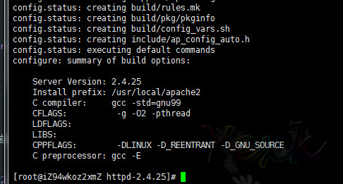
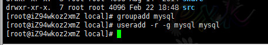
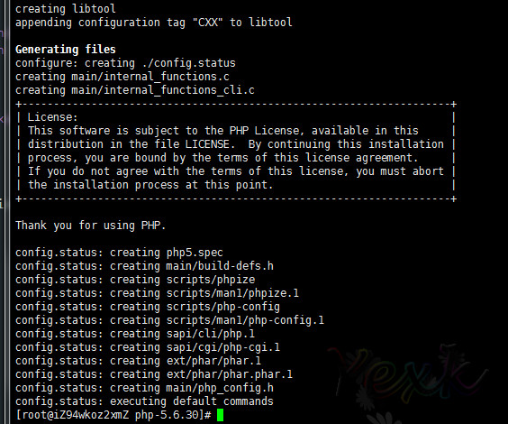
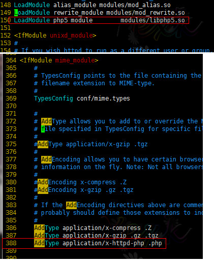
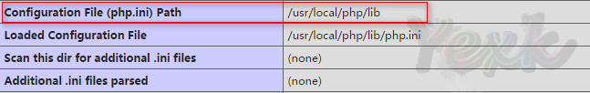

# Linux下AMP环境安装
安装正常的流程：下载-上传到Linux-解压-配置-安装
安装软件的顺序基本：Apache - MySQL - PHP
# 安装Apache
解压。把下载好的
httpd-2.4.25.tar.gz文件上传到服务器，然后进行解压安装。 命令：tar -zxvf httpd-2.4.25.tar.gz
配置。进入到
httpd-2.4.25目录进行编译安装。小插曲（在编译没有报错的情况下是可选步骤）
在Apache2.4后的版本已经不再捆绑
APR、APR-Util和PCRE。所有这里如果报这个错。需要先去安装这个。
把这三个包依次安装。
安装步骤：解压-配置-安装1）安装APR解压:tar -zxvf apr-1.5.2.tar.gz进入解压后的目录:cd apr-1.5.2配置：./configure --prefix=/usr/local/apache2/plugin/apr(--prefix=安装路径) 编译&安装:make && make install安装
ARP-Util解压:tar -zxvf apr-util-1.5.4.tar.gz进入解压后的目录:cd apr-util-1.5.4配置:./configure --prefix=/usr/local/apache2/plugin/apr-util --with-apr=/usr/local/apache2/plugin/apr/bin/apr-1-config(--prefix=安装路径，--with-apr=apr路径/bin/apr-1-config) 编译&安装:make && make install安装
PRCE解压:tar -zxvf pcre-8.40.tar.gz进入解压后的目录:cd pcre-8.40配置:./configure --prefix=/usr/local/apache2/plugin/prce(--prefix=安装路径) 编译&安装:make && make install
命令：
./configure --prefix=/usr/local/apache2 --with-apr=/usr/local/apache2/plugin/apr --with-apr-util=/usr/local/apache2/plugin/apr-util --with-pcre=/usr/local/apache2/plugin/pcre配置完成： 
编译&安装 命令：
make && make install编译&安装完成：

# 安装MySQL
解压。把下载好的
mysql-5.7.17-linux-glibc2.5-x86_64.tar.gz进行解压。 命令：tar -xvf mysql-5.7.17-linux-glibc2.5-x86_64.tar.gz复制。这是是已经编译好的文件。所以没有编译安装这回事，解压就能用了。 命令：
cp -r ./mysql-5.7.17-linux-glibc2.5-x86_64 /usr/local/mysql(复制到你想存放的位置)添加MySQL系统账号。 命令：
groupadd mysql和useradd -r -g mysql mysql复制&编辑配置文件
复制命令：
cp ./support-files/my-default.cnf /etc/my.cnf(提示是否覆盖，覆盖就行) 复制命令：cp ./support-files/mysql.server /etc/init.d/mysql(用于快速启动的)
编辑命令：
vim /etc/my.cnf
添加权限和数据文件夹 在mysql目录下我们新增一个data文件夹用于存放数据库文件。 命令：
mkdir /usr/local/mysql/data同时给mysql文件夹下的所有文件分配给mysql同时赋予755权限。 分配用户命令：chown -R mysql.mysql ./mysql/分配权限命令：chmod -R 755 ./mysql/这里我为了方便就直接给data设置777权限。

安装&初始化数据库 命令：
bin/mysqld --initialize --user=mysql --basedir=/usr/local/mysql --datadir=/usr/local/mysql/data请注意里面有个细节:最后一行有个初始化密码：
5ohVifrT<lgv用于待会登陆操作的。如果没有看到用命令cat ~/.mysql_secret查看。
命令：
bin/mysql_ssl_rsa_setup --datadir=/usr/local/mysql/data
至此MySQL数据库已经安装完成。
修改密码 通过上面一步可以发现系统为我们提供了一个初始化密码，但不好记忆。我们就会想着修改MySQL密码。
第一次登陆的时候输入系统给我们初始化好的密码:
5ohVifrT<lgv
其他的配置开机启动等等
# 安装PHP
解压。把下载好的
php-5.6.30.tar.gz进行解压。 命令：tar -zxvf php-5.6.30.tar.gz配置。这里的配置需要自己按需加载。需要开启什么扩展就添加什么扩展。
这是我安装的扩展。仅供参考。 命令：
./configure --prefix=/usr/local/php --with-mysql=mysqlnd --with-mysqli=mysqlnd --with-apxs2=/usr/local/apache2/bin/apxs --enable-sysvsem --with-curl --enable-mbregex --enable-mbstring --with-mcrypt --with-gd --with-mhash --enable-sockets --with-xmlrpc --with-zlib --enable-pdo --with-pdo-mysql=mysqlndphp 7.0 不支持mysql了。。需去掉
--with-mysql选项小插曲
 1）配置的时候可能会遇到
1）配置的时候可能会遇到configure: error: xml2-config not found. Please check your libxml2 installation.需要安装libxml2和libxml2-devel。这里使用在线安装。 命令：yum install libxml2和yum install libxml2-devel
2）或者
configure: error: Please reinstall the libcurl distribution - easy.h should be in /include/curl/解决命令：yum -y install libcurl-devel3） 或者：
configure: error: png.h not found.解决命令：yum -y install libpng-devel4） 或者：
configure: error: mcrypt.h not found. Please reinstall libmcrypt.命令： # wget ftp://mcrypt.hellug.gr/pub/crypto/mcrypt/libmcrypt/libmcrypt-2.5.7.tar.gz # tar zxf libmcrypt-2.5.7.tar.gz # cd libmcrypt-2.5.7 # ./configure # make && make install1
2
3
4
5
65）如果还有其他页面错误请自行百度。这里就不一一贴出了。
编译&安装 命令：
make && make install至此PHP就已经安装完成了。
# 整合配置
1） 编辑Apache的配置文件。召唤PHP小弟。
命令：vim /usr/local/apache2/conf/httpd.conf

记得重启Apache。然后测试php文件。
2）编辑PHP的配置文件。
首先源码安装的php.ini文件是在源码包里面才有的。
然后我们通过测试函数：phpinfo();查看php.ini应该存放的位置。

下一步复制文件
命令：cp php.ini-production /usr/local/php/lib/php.ini
重启Apache。这样配置文件就加载上了。。
# 2017年7月18日 更新mariadb
文件下载: mariadb-10.2.7-linux-systemd-x86_64.tar.gz
The basic commands that you must execute to install and use a
MariaDB binary distribution are:
shell> groupadd mysql
shell> useradd -g mysql mysql
shell> cd /usr/local
shell> gunzip < /path/to/mysql-VERSION-OS.tar.gz | tar xvf -
shell> ln -s full-path-to-mysql-VERSION-OS mysql
shell> cd mysql
shell> chown -R mysql .
shell> chgrp -R mysql .
shell> scripts/mysql_install_db --user=mysql
shell> chown -R root .
shell> chown -R mysql data
shell> bin/mysqld_safe --user=mysql &
2
3
4
5
6
7
8
9
10
11
12
13
14
15
16
# 问题：AH00558: httpd: Could not reliably determine the server's fully qualified domain name, using localhost.localdomain. Set the 'ServerName' directive globally to suppress this message
解决办法是: vim /你的httpd路径/httpd.conf
#SeverName www.expample.com:80
# 改成
SeverName 127.0.0.1
2
3